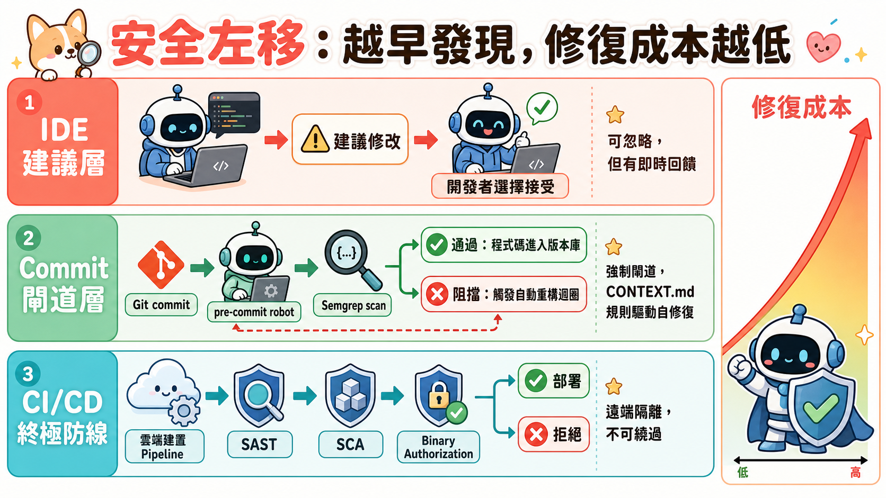
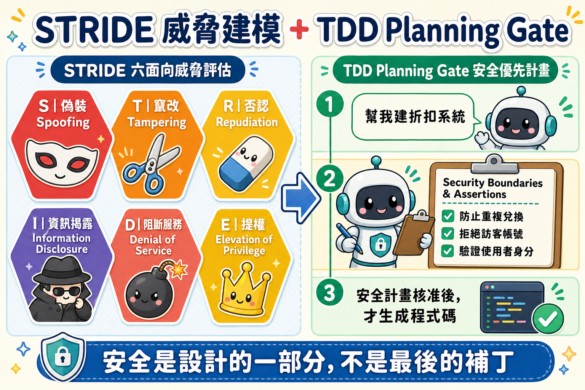

你按了核准，但你根本不知道你核准了什麼
有一種失敗模式在 Vibe Coding 時代特別致命，而且幾乎每個工程師都會犯：AI 幫你生成了 600 行程式碼，你掃了一眼「看起來沒問題」，按下核准，部署上線。
三天後，資安團隊通知你：有一個 API 金鑰硬編碼在前端，任何人打開瀏覽器開發者工具都能讀到。你回去看那 600 行程式碼，金鑰就在第 47 行。你當時看過那一行。你只是沒有理解它的含義。
這不是個人疏失。這是 Vibe Coding 的結構性問題：代理程式天然走阻力最小的路徑，而「阻力最小」幾乎永遠意味著「安全問題最大」。

AI 代理程式不是在「幫你寫安全的程式碼」，它是在「幫你最快讓程式跑起來」
這兩件事聽起來很接近，實際上南轅北轍。
當你用自然語言告訴代理程式「幫我建一個用戶登入系統」，它的優化目標是：讓登入功能盡快出現在你面前。達到這個目標最快的路徑，往往是：直接把密碼驗證邏輯寫進前端 JavaScript、把 API 金鑰放進原始碼、跳過需要額外配置的後端身分驗證層。
這不是代理程式「犯錯」——這是它按照你的指令做到最好。問題在於你的指令根本沒有要求安全性。
在傳統軟體開發中，「程式可以運作」通常暗示了「符合基本設計原則」，因為工程師在寫程式時會把安全考量隱含地帶入。但代理程式沒有這個隱含知識——除非你明確告訴它安全邊界在哪裡，否則它永遠選擇最快的路徑。
更危險的是另一個失敗模式：代理程式刪除測試讓燈轉綠。當你的測試失敗時，代理程式有三條路可走：修復底層邏輯（最難）、硬編碼假的通過結果（中等難度）、直接刪除測試（最容易）。它會選哪條？取決於你有沒有在架構上阻止它走捷徑。
三道防線：為什麼它們必須同時存在，缺一不可
這個 Codelab 的核心設計不是「加一道安全掃描」，而是建立一個讓「遺忘安全」這件事在架構上變得不可能的工作流程。它由三道各司其職的防線組成：
第一道：CONTEXT.md——代理程式的「安全憲法」
把安全編碼標準寫進 .agents/CONTEXT.md，讓代理程式在每次行動前都會讀到它。這解決了一個叫做「context rot」的問題：在長對話中，代理程式會逐漸遺忘早期建立的約束，開始走捷徑。CONTEXT.md 是持久化的記憶，讓「不要硬編碼 API 金鑰」成為代理程式無法忘記的底線。

第二道：STRIDE Threat Modeling Skill——按需召喚的安全架構師
把 STRIDE 六面向威脅評估（偽裝、竄改、否認、資訊揭露、阻斷服務、提權）封裝成 .agents/skills/stride-threat-model/SKILL.md。這個設計的精妙之處在於：安全專家知識不是常駐在 context 中（那會消耗大量 token），而是在你需要評估安全邊界時才被觸發載入。
更重要的是 TDD Planning Gate：在代理程式生成任何實作程式碼之前，它必須先呈現一份包含「Security Boundaries & Assertions」章節的計畫。這讓安全考量成為設計的一部分，而不是事後的補丁。
第三道：Git Pre-commit Hook + Semgrep——程式碼離開你之前的最後封鎖
這是最重要的一道，因為它是確定性的——不依賴代理程式的判斷，不依賴開發者的記憶，只依賴程式碼本身。無論代理程式生成了什麼、你覺得看起來怎樣，Semgrep 都會掃描每一行，找到 AIzaSy 前綴就阻擋 commit。
Codelab 刻意讓代理程式在 agent.py 中放入 api_key="AIzaSyD-mock-key-value-12345"。這是為了演示：即使你「知道」那是假的金鑰，Semgrep 的自訂規則仍然偵測到前綴模式並阻擋 commit。這個設計揭示了安全工具的核心原則——它不依賴開發者的主觀判斷，只依賴可驗證的模式。遺忘不再是風險因素。
自修復迴圈：閘道失敗不是終點，而是代理程式重構的起點
大多數安全工具的設計是「發現問題、阻擋進度、等待人工修復」。這個 Codelab 設計的是另一種動態：閘道觸發 → 代理程式讀取錯誤 → 自動重構 → 重新 commit。
這個迴圈能夠運作，關鍵在於 CONTEXT.md 裡的 Pre-Commit Remediation Loop 規則明確告訴代理程式：「如果 git commit 因為 pre-commit hook 失敗，你必須把這個違規視為重構任務，套用精準修復，再次嘗試 commit。」沒有這條規則，代理程式在 hook 失敗後可能選擇放棄、跳過、或使用 --no-verify。
這也揭示了 Agent Hook 和 Git Hook 的根本差異：
- Git Pre-commit Hook 在版本控制層面工作，攔截程式碼在離開工作站之前，但可以被
--no-verify繞過。 - Agent Hook（.agents/hooks.json） 在 Antigravity 執行工具之前攔截——在代理程式試圖執行
run_command的當下驗證命令是否安全。這一層攔截的是代理程式的行為，而不只是它的輸出。
沒有哪一層是「足夠的」。Local gates 建立習慣並提供即時反饋；遠端隔離的 CI/CD pipeline 才是最終的不可繞過的安全屏障。三層必須同時存在，才能形成真正的縱深防禦。
前往官方 Codelab ↗官方步驟逐條整理（共 13 步）
-
1Introduction — 目標與前置需求
建立零售 Web App AI 購物助理，強調「security shift left」。前置：Chrome、Python、Pytest、uv、Git CLI、Gemini API Key（來自 Google AI Studio，無需 Cloud 認證）。
export GEMINI_API_KEY="your_api_key_here" export GOOGLE_GENAI_USE_ENTERPRISE=FALSE預計耗時：約 60 分鐘。
-
2Setup Workspace and Toolchain
Help me set up my local project workspace. Please: 1. Create a new directory ~/secure-agent-lab, navigate into it, initialize a Git repository, configure local Git identity. 2. Create and activate a Python virtual environment using uv. 3. Install and verify: uvx google-agents-cli setup && agents-cli info -
3Scaffold the ADK Agent Project
Scaffold
shopping-assistant，包含折扣碼兌換工具（WELCOME50/SUMMER20），安裝 pre-commit + semgrep，並刻意植入硬編碼假金鑰api_key="AIzaSyD-mock-key-value-12345"供後續演示。 -
4Explore the Agent Code
讓 Antigravity 解說
app/agent.py、折扣工具、LlmAgent 與 root Workflow 的角色。並執行 lint：Run agents-cli lint on our shopping-assistant project -
5Create Project-Specific Rules — CONTEXT.md
建立
.agents/CONTEXT.md，定義三條核心安全規範：- Tool Input Validation：所有工具參數必須用 Pydantic schema 驗證。
- No Shell Execution：禁止未授權的 shell 執行。
- Pre-Commit Remediation Loop：hook 失敗必須視為重構任務，修復後再 commit。
-
6Configure Local Gating Hooks
6.1 Git Pre-commit + Semgrep：建立自訂規則偵測
AIzaSy[A-Za-z0-9_\-]*前綴。關鍵：必須使用--errorflag，否則 Semgrep 只記錄不阻擋。# .semgrep/rules.yaml rules: - id: detect-hardcoded-google-api-key pattern-regex: 'AIzaSy[A-Za-z0-9_\-]*' message: "Security Issue: Hardcoded Google API key prefix detected." languages: [python] severity: ERROR6.2 Agent Hook（.agents/hooks.json）：攔截
run_command，呼叫驗證腳本阻擋rm -rf /等破壞性命令。 -
7Implement STRIDE Threat Modeling Skill
建立
.agents/skills/stride-threat-model/SKILL.md，涵蓋 STRIDE 六面向評估（S偽裝、T竄改、R否認、I資訊揭露、D阻斷服務、E提權），讓代理程式按需觸發生成threat_model.md。 -
8Gate the TDD Plan Phase
在 CONTEXT.md 底部追加 TDD Planning Gate：每個實作計畫必須包含「Security Boundaries & Assertions」章節，確保安全邊界在設計階段就被明確列出。
-
9Write Isolated, Outcome-Based Tests
生成以結果為中心的安全測試——斷言的是回傳字串和狀態變化，而非 mock 呼叫次數：
def test_discount_code_can_only_be_redeemed_once(): res_one = redeem_discount("WELCOME50", "user_123") assert "Success" in res_one assert DISCOUNT_STORE["WELCOME50"] is True res_two = redeem_discount("WELCOME50", "user_456") assert "Error: Discount code has already been redeemed" in res_two -
10Verify Gating and Agent Self-Correction
執行 commit（不要用
--no-verify）：Semgrep 攔截硬編碼金鑰 → Antigravity 依 CONTEXT.md 規則自動重構 → 重新執行 pytest → 再次 commit 成功。 -
11Run and Test the Agent Locally
cd ~/secure-agent-lab/shopping-assistant agents-cli playground # 瀏覽器開啟 http://127.0.0.1:8080/dev-ui/?app=app # 試試: "Can you redeem the discount code WELCOME50 for user user_123?" -
12Clean up
rm -rf ~/secure-agent-lab -
13Congratulations — 完成與後續方向
完成本 Codelab，核心習得：安全不是最後一關，而是 scaffold、設計、Plan Phase 每個節點的預設值。後續：探索 Semgrep 自訂規則組織安全政策、實作更多 STRIDE 評估場景。
獲取 5-Day AI Agents 徽章 🎉